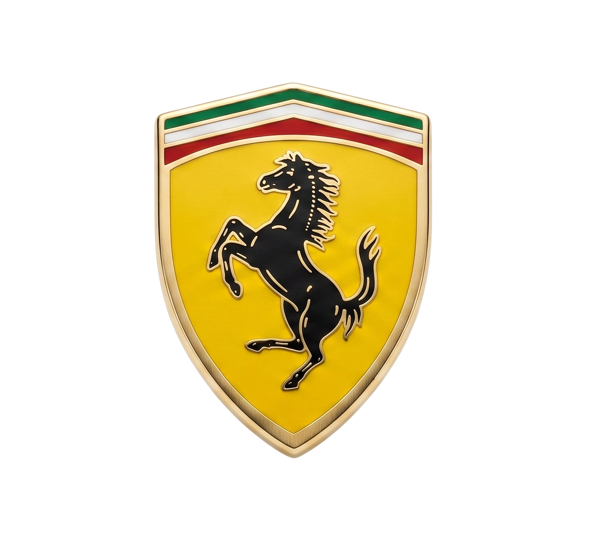
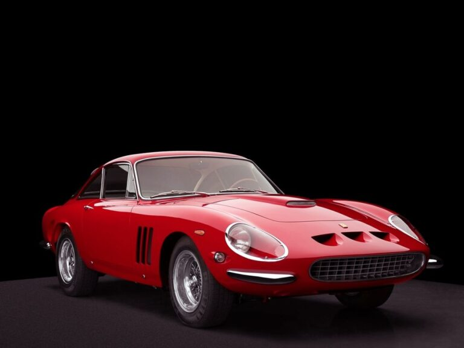
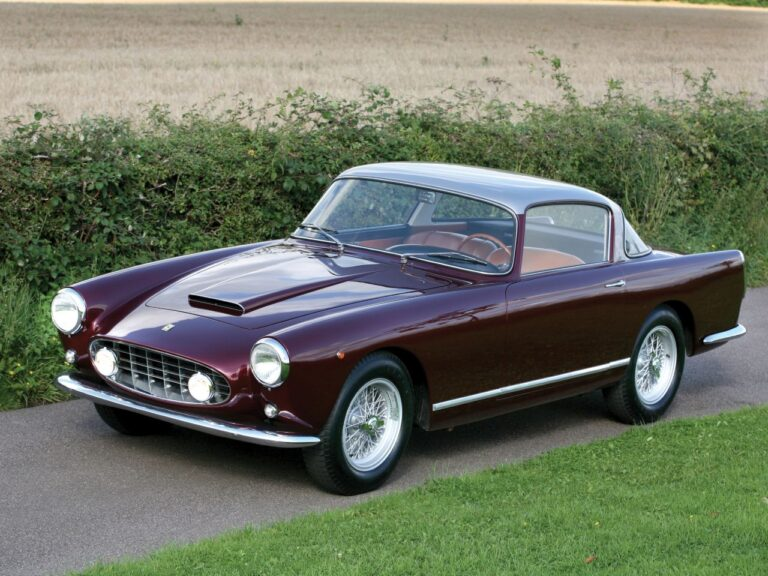
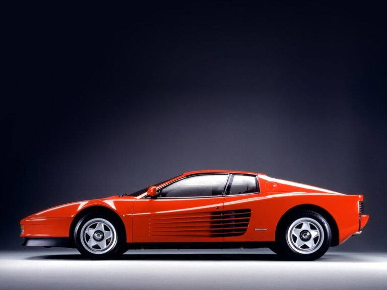
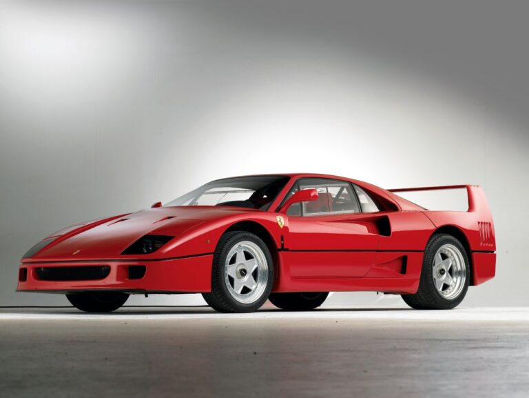
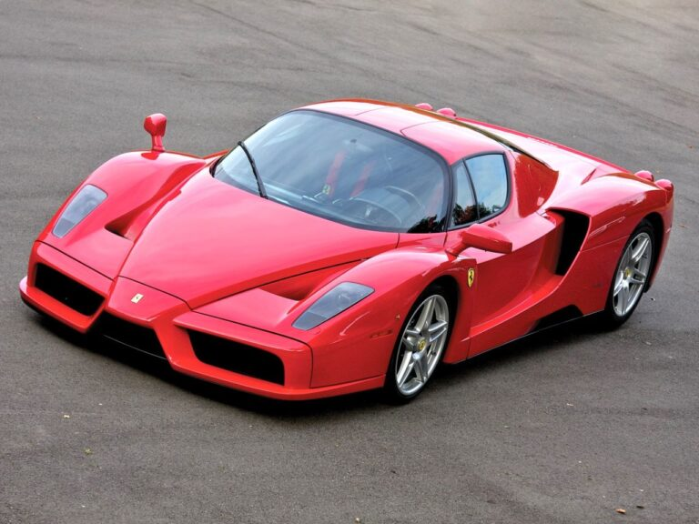
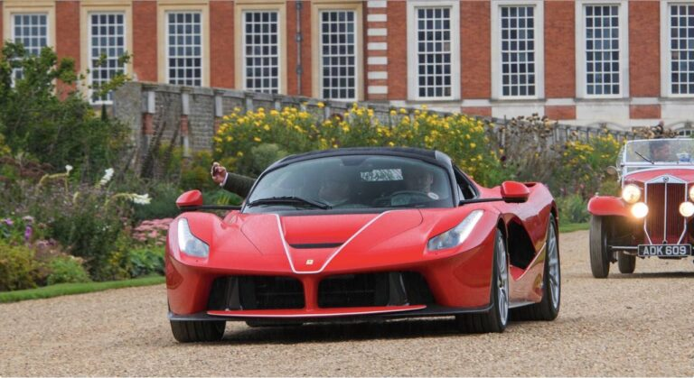
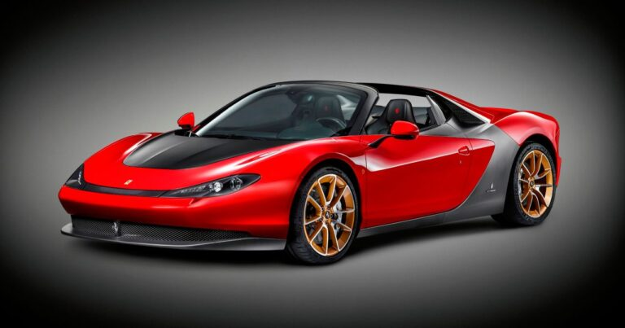

História da Ferrari
O Cavalo Rampante
O “cavalinho” da Ferrari, inicialmente, não era utilizado em carros, mas sim em um avião da Força Aérea italiana pilotado por Francesco Barraca. Seu piloto usava o cavalo rampante de forma decorativa na lateral de seu avião, durante a I Guerra Mundial.

Segundo conta a história, Barraca pertencia a uma família rica que possuía um elevado número de cavalos. Em 1923, Enzo Ferrari se encontrou com a mãe do piloto, onde pediu que o símbolo fosse passado para sua marca, com o argumento que o cavalo rampante traria sorte. O logotipo foi mais tarde apresentado ao público italiano, em 1932.
A cor vermelha
Inicialmente, Enzo Ferrari não tinha o propósito de transformar o vermelho como a cor associada a sua marca, mas a história mudou por uma ordem da Federação Internacional de Automobilismo.
Nos primeiros Grand Prix, foi determinado que todos os carros de corrida italianos teriam que ter a cor vermelha. Hoje em dia essa regra não existe mais, porém o vermelho acabou se tornando a cor favorita dos clientes da Ferrari, fazendo o cavalo da Ferrari e o vermelho serem sinônimo de status.
Principais modelos da Ferrari
Os modelos da Ferrari já nascem como ídolos de todo um segmento. Não há um lançamento que não seja dito como o nascimento de uma lenda. E entre seus principais modelos temos o Ferrari 250.

O 250, que estreou em 1963, é um dos modelos mais valiosos da fabricante de Maranello. Ele é uma derivação do Ferrari 250 GT Boano-Ellena, que apareceu pela primeira vez em 1956, durante o Salão de Genebra, na Suíça.
O Boano-Ellena possuía motor V12 2.9 litros de 240 cv de potência e se chamava “Boano” por causa do fabricante de sua carroceria, dirigida por Felice Mario Boano, ex-colaborador da marca Ghia. O “Ellena” veio de Ezio Ellena, genro de Boano.

Outro modelo memorável é o Ferrari Testarossa de 1984. O esportivo carregava nada menos que um motor 4.9 de 12 cilindros opostos capaz de gerar 390 cv.

Já o Ferrari F40 foi produzido em comemoração aos 40 anos de existência da Ferrari, em 1987. O F40 era equipado com motor V8 de 2,9 litros de 478 cv de potência. O desenho veio do estúdio Pininfarina e a construção usava materiais como kevlar e fibra de carbono, para garantir o pouco peso.

Em 2002 nasceu o Ferrari Enzo, como uma homenagem ao criador da empresa e marca italiana. O modelo teve somente 400 unidades produzidas, cada uma carregando sob o capô o motor 6.0 V12 de 660 cv.

Já em 2013 a Ferrari lançava seu primeiro supercarro híbrido, o LaFerrari 6.3 V12 com motor a combustão de 800 cv de potência, trabalhando junto de um motor elétrico que rendia mais 163 cv.

Por último, temos o Ferrari Sergio. Limitado a apenas seis unidades, o modelo celebra a parceria da Ferrari com o estúdio de design Pininfarina. Sergio leva consigo o motor 4.5 V8 de 605 cv e, segundo a Ferrari, faz a marca de zero a 100 km/h em apenas três segundos.
